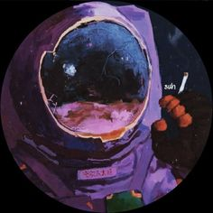
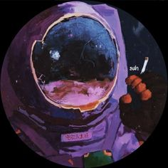
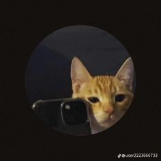
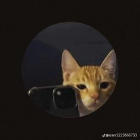

Es uno de los creadores de contenido hispanos más grandes dentro de Twitch, con más de 4.4 millones de suscriptores en su canal de Twitch y otros 3.9 millones en Youtube
. En cada uno de sus directos suele superar los 20,000 espectadores simultáneos
El Mariana es conocido por hacer gameplays de Minecraft, PUBG, Warzone y muchos otros videojuegos
. Ha participado en varios eventos exitosos, como Squid Craft Games y el Twitch Rivals Ultimate Challenge 2
. También ha colaborado con otros youtubers y streamers en eventos y series de contenido
En cuanto a su carrera en las redes sociales, El Mariana comenzó en TikTok en 2018 y ahora tiene más de 900k seguidores
. Ha sido nominado a streamer revelación en los ESLAND y ha ganado un botón de oro de Youtube tras lograr más de un millón de suscriptores
En resumen, El Mariana es un streamer, youtuber y tiktoker mexicano conocido por hacer gameplays de videojuegos y por ser uno de los creadores de contenido hispanos más grandes dentro de Twitch. Ha participado en varios eventos exitosos y ha ganado un botón de oro de Youtube. Aunque su comunidad en línea ha sido calificada como "tóxica", El Mariana ha expresado su deseo de modificar su contenido para adaptarse a su creciente audiencia
Rivers GG
Rivers se hizo famosa por hacer gameplays de videojuegos en Twitch y otras plataformas de streaming
. Ha ganado popularidad en la comunidad de gamers y ha sido elogiada por su habilidad para jugar videojuegos y su personalidad amigable
. Además, Rivers ha participado en varios eventos y colaboraciones con otros streamers, y ha sido objeto de interés por parte de los medios de comunicación
Rivers también es conocida por ser la presidenta del PIO FC, un club de fans de la Liga MX
. Ha sido nominada a varios premios, incluyendo los Streamy Awards y los MTV Millennial Awards
. Además, Rivers ha sido entrevistada en varias ocasiones y ha reaccionado a su propia biografía en un video de YouTube
En resumen, Samantha Treviño Rivera, también conocida como Rivers o La Rivers, es una streamer, youtuber y creadora de contenido mexicana. Se hizo famosa por hacer gameplays de videojuegos en Twitch y otras plataformas de streaming, y ha ganado popularidad en la comunidad de gamers. Además, Rivers es conocida por ser la presidenta del PIO FC y ha sido nominada a varios premios.
ALDO_GEO
Aldo_geo ha ganado popularidad en la plataforma de streaming Twitch, donde su cuenta ha atraído a más de 1.3 millones de seguidores
. Se destaca por su interacción con los espectadores en el chat y por proporcionar información personal durante sus transmisiones
Antes de dedicarse al streaming, Aldo_geo trabajó como programador Android
. Además de Twitch, también tiene una presencia en Instagram, donde cuenta con más de 1 millón de seguidores
En resumen, Aldo_geo es un streamer mexicano conocido por sus transmisiones en vivo de videojuegos, especialmente Minecraft y Grand Theft Auto. Nació el 14 de octubre de 1996 en Aguascalientes, México, y ha ganado popularidad en Twitch con más de 1.3 millones de seguidores en su cuenta.
Aldo_geo es un streamer mexicano conocido por sus transmisiones en vivo de videojuegos, especialmente Minecraft y Grand Theft Auto
. A continuación se presenta una biografía resumida de Aldo_geo basada en los resultados de búsqueda:
Nombre real: No se conoce con certeza cuál es el nombre real de Aldo_geo, ya que se le conoce por ese nombre en el ámbito de los streamers
Fecha de nacimiento: 14 de octubre de 1996
Lugar de nacimiento: Aguascalientes, México
Edad: 26 años (a partir de 2023)


 

 
